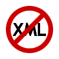

WebHiTech — многоплановый контент-проект, в основе которого лежат интернет-издание о современных технологиях веб-разработки, офлайновые образовательные мероприятия и конкурс технологического совершенства сайтов, нацеленный на поддержку распространения современных веб-стандартов в Рунете.
Свежее на сайте
Конкурс WebHiTech: сезон пятый
Открыт прием работ на конкурс WebHiTech по версии 2012 года. WebHiTech — проект вполне себе с историей, в этом году конкурс проводится уже в пятый раз! К этому небольшому юбилею мы решили в определенной мере освежить формат конкурса. Из ключевых нововведений: постоянный экспертный клуб, расширенный список номинаций, полноценный отборочный тур без поблажек, прием работ в течение большей части года. Подробности — в новых редакциях миссии конкурса и правил его проведения.
Практические статьи
С удобством от устройства к устройству. Часть 4
В весьма пространной третьей части нашей серии статей мы обсудили пример простого шаблона веб-страницы, использующего Media Queries, а вместе с ним по ходу пьесы — и вообще актуальные подходы к верстке с применением HTML5 и CSS3. Поначалу планировалось этим и ограничиться, но вдруг выяснилось, что тщательный разбор примера породил у некоторых читателей больше вопросов, чем ответов. В основном дело касается особенностей отображения веб-страниц на мобильных устройствах. В общем, похоже, назрела «сверхплановая», четвертая статья.
Краткие заметки
Прощай, XHTML!..

W3C и вместе с ним все профессиональное сообщество веб-разработчиков связывали большие надежды с XHTML. В сущности, еще совсем недавно, несколько лет тому назад, веб-разработчики прогрессивных взглядов верили в то, что рано или поздно XHTML в самом деле воцарится на планете и заменит собой «классический» HTML. Но HTML5 скорректировал эти планы.
Мероприятия
Клиентские технологии на конференции РИТ++
— состоялась профессиональная конференция для веб-разработчиков РИТ++. Слушателям были предложены семь тематических секций, среди которых, конечно же, «Клиентские технологии». Клиентская секция организована силами объединения разработчиков «Веб-стандарты».